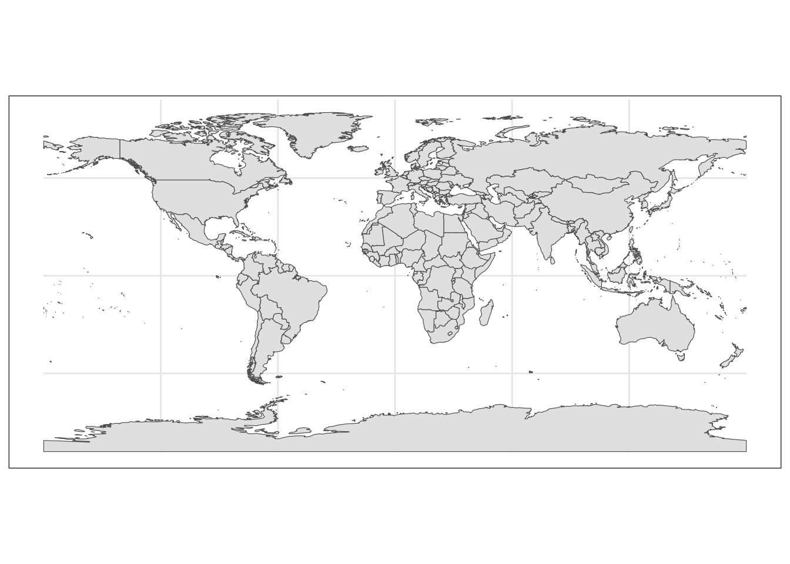
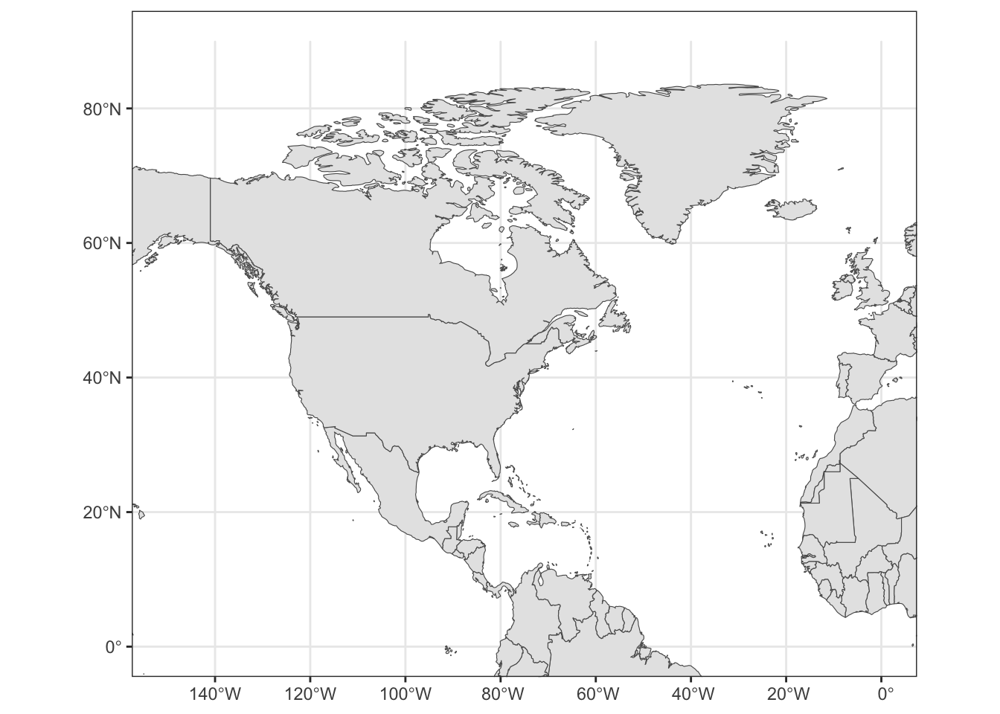
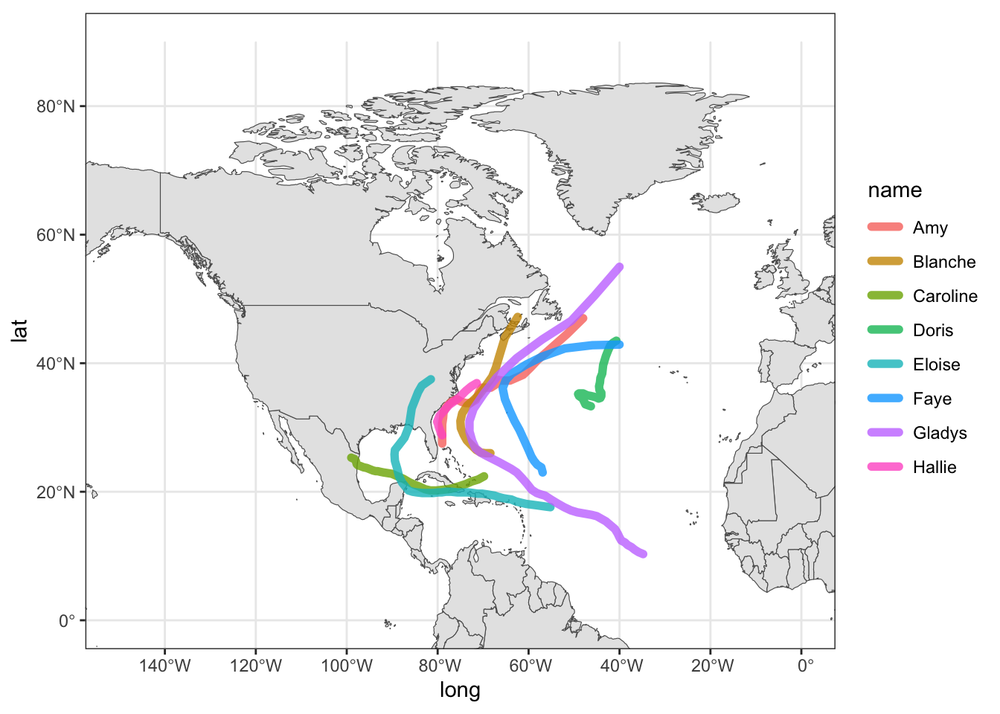
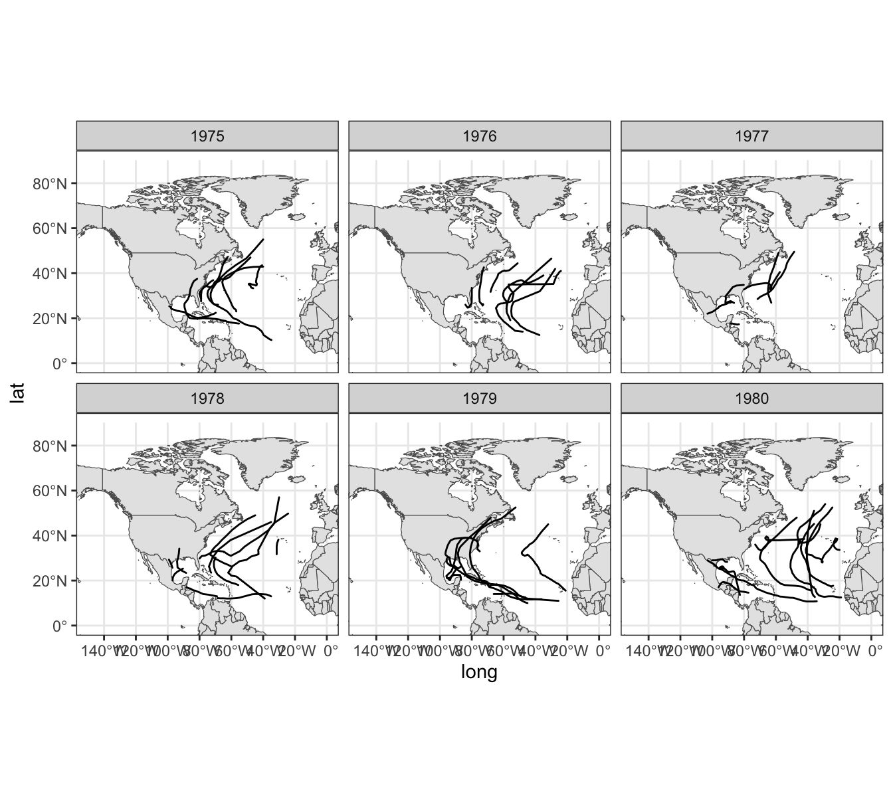

10 Less Basic Maps
The code in this chapter requires the following packages:
library(tidyverse) # for syntactic manipulation of tables
library(rnaturalearth) # world map data from Natural Earth
library(rnaturalearthdata) # companion package of rnaturalearthand the following table for storms in 1975:
storms75 <- filter(storms, year == 1975)10.1 More mapping approaches
Another interesting map graphing approach is by using map-objects from the
package "rnaturalearth".
We use the ne_countries() function—from "rnaturalearth"—to get world
country polygons. In the following command, we specify a medium scale
resolution, and a returned object of class "sf" (simple features).
# another world data frame
world_df <- ne_countries(scale = "medium", returnclass = "sf")
class(world_df)## [1] "sf" "data.frame"Now we can pass world_df to ggplot(), and use geom_sf() which is the
function that allows us to visualize simple features objects "sf".
# another world map (from "rnaturalearth")
ggplot(data = world_df) +
geom_sf() +
theme_bw()
One advantage of using this other mapping approach is that we can zoom-in
without having distorted polygons. To focus on a specific region, we set the
x-axis and y-axis limits with the coord_sf() function. Again, for coding
convenience, let’s create another "ggplot" object
# ggplot object to be used as a canvas
gg_world2 <- ggplot(data = world_df) +
geom_sf() +
coord_sf(xlim = c(-150, 0), ylim = c(0, 90), expand = TRUE) +
theme_bw()
gg_world2
Now let’s add the storms:
gg_world2 +
geom_path(data = storms75,
aes(x = long, y = lat, color = name),
lineend = "round", size = 2, alpha = 0.8)
10.1.1 Storms from 1975 to 1980
As a simple experiment, let’s graph storms between 1975 and 1980 (six years).
First we create a dedicated data table storms_75_80 to select the rows we are
interested in:
storms_75_80 <- filter(storms, year %in% 1975:1980)And then we can use facet_wrap(~ year) to graph storms by year:
gg_world2 +
geom_path(data = storms_75_80,
aes(x = long, y = lat, group = name),
lineend = "round") +
xlim(c(-150, 0)) +
ylim(c(0, 90)) +
facet_wrap(~ year)